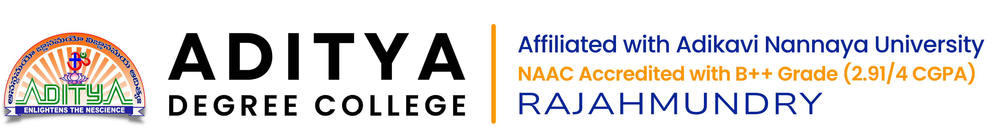
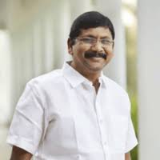

Sri Nallamilli Sesha Reddy as a founder cum chairman, promoted an educational society in the name and style of Aditya Academy at Kakinada in the year 1984, with a vision and mission to create a platform for holistic growth and success to students at all levels (i.e. from KG to PG). Aditya has made its entry into the educational arena with a public school to meet the needs of primary and secondary education.
In succession and with rapid strides, the academy established a number of Junior Colleges, Degree Colleges, PG Colleges, Engineering Colleges, Pharmacy Colleges, Nursing Colleges, and Teacher Training Institutions. The silver-jubilee educational group with 60,000 students in 60 institutions with 6000 staff across three districts in Andhra Pradesh has become the standard - bearer for quality education. In every stream, Aditya has become a spring-board for success through its powered vision, constant innovation and professional excellence.
Aditya Engineering College, being the first of its kind in the district to be recognized by the AICTE and certified by the prestigious ISO 2000, speaks volumes of what ADITYA is.
Owing to the rapid changes in the field of education, subjects like Computer science, Bio-technology, Bio-chemistry, Micro-biology and Electronics have gained enormous significance as they provide great career opportunities.
Keeping this in view, ADITYA launched Advanced courses like Forensic Science, Data Sciences, Artificial Intelligence & Robotics, Digital Marketing and Animation in Graduation level.